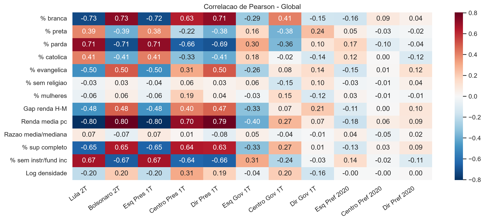
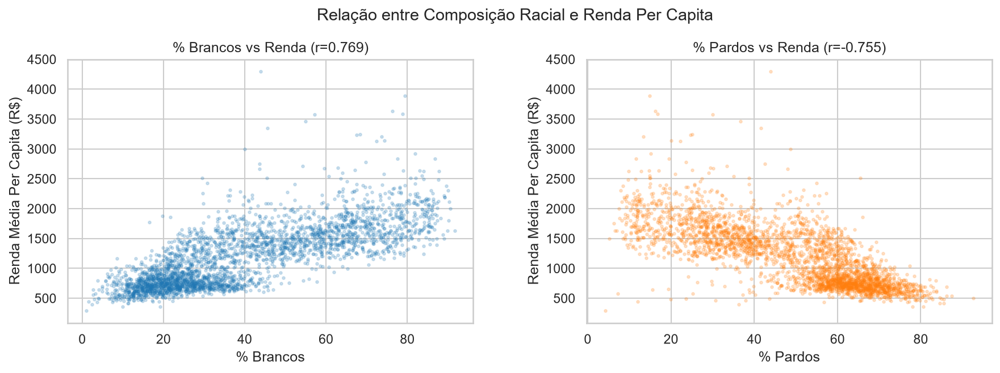
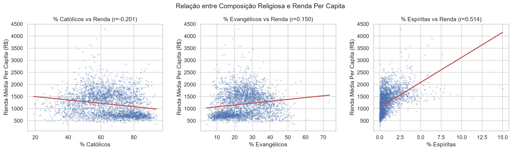
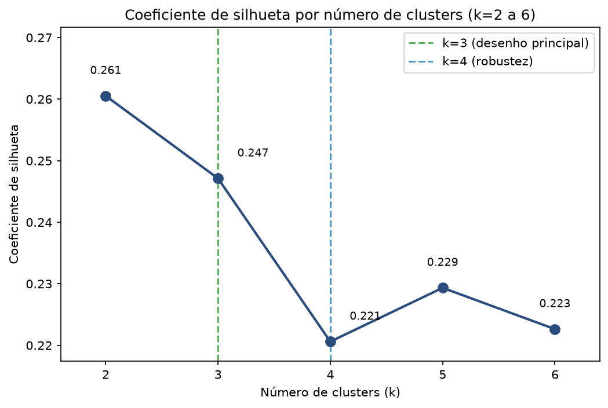
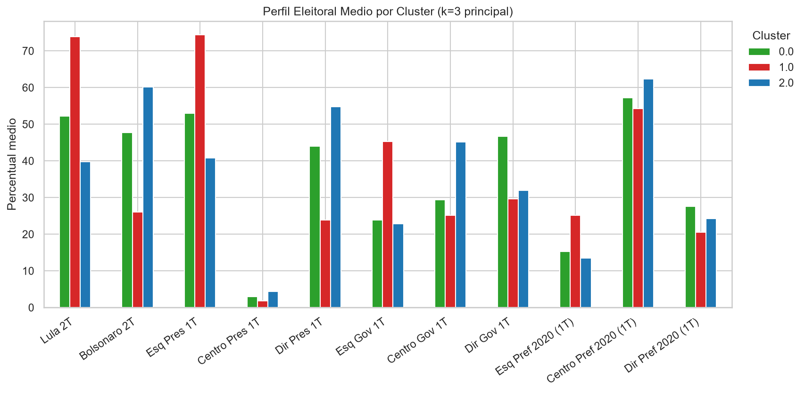
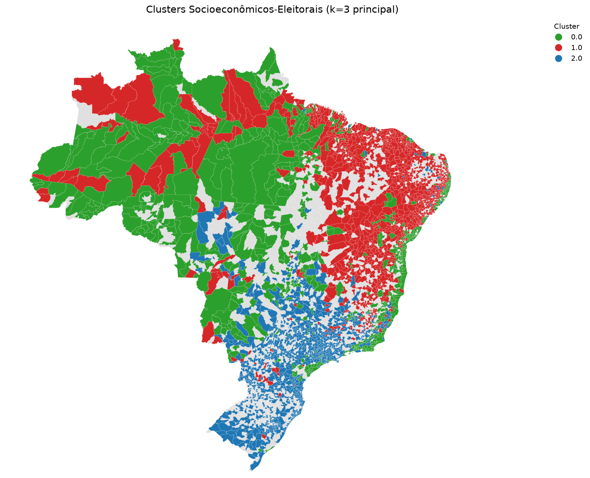
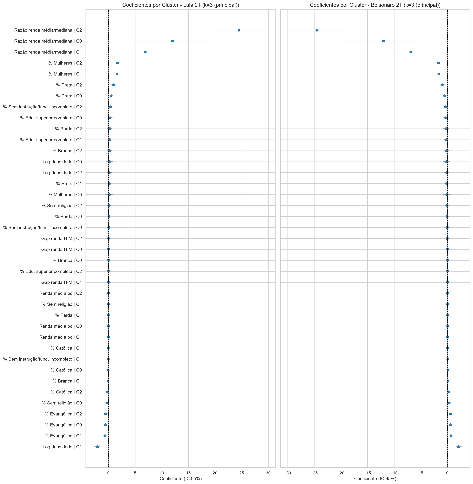
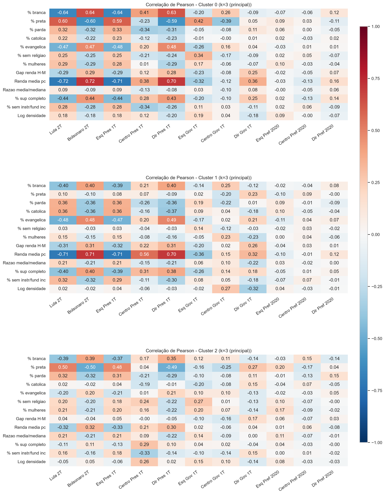
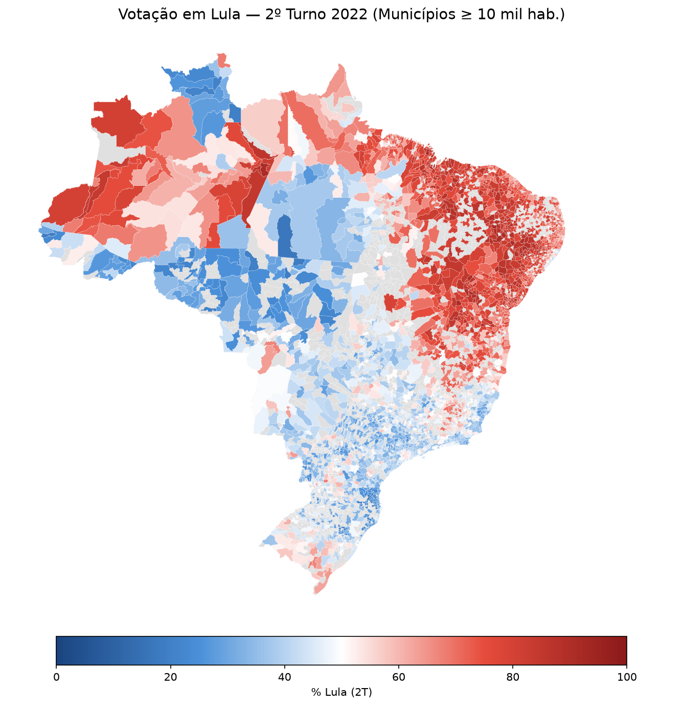
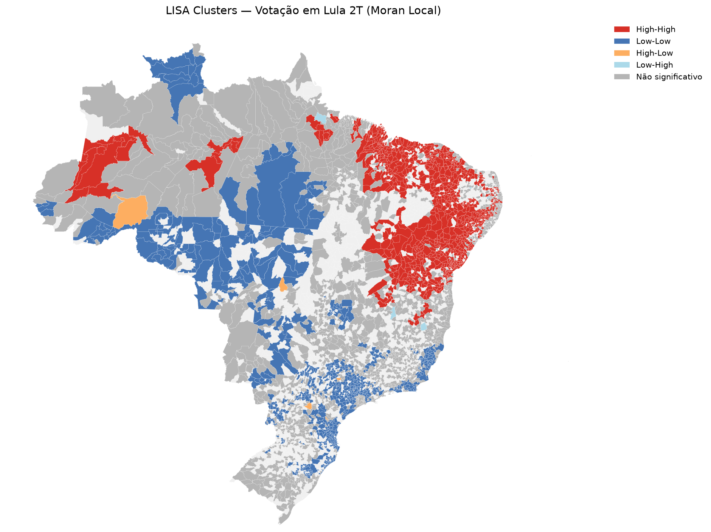

Evidências do Censo 2022 e do TSE
Este trabalho teve como objetivo quantificar a associação entre estrutura socioeconômica municipal e desempenho eleitoral do Executivo no Brasil, comparando padrões nacionais com padrões estratificados por cluster e avaliando sua organização espacial.
“Quais indicadores socioeconômicos explicam diferenças de comportamento eleitoral entre territórios brasileiros estruturalmente semelhantes?”
Nas eleições presidenciais de 2022, o Brasil manteve um padrão de forte polarização territorial entre os eleitorados de Lula e Bolsonaro, cuja relação com fatores sociais municipais permaneceu pouco explorada de forma integrada, sobretudo combinando segmentação estrutural e dependência espacial numa mesma base analítica. Diante dessa lacuna, este trabalho teve como objetivo quantificar a associação entre estrutura socioeconômica municipal e desempenho eleitoral do Executivo no Brasil, comparando padrões nacionais com padrões estratificados por cluster e avaliando sua organização espacial. Foram integrados dados do Censo 2022 (IBGE) e do TSE para 3076 municípios (população igual ou superior a 10 mil habitantes, 93,71% da população nacional), submetidos a correlação de Pearson e Spearman, segmentação por K-means (k=3 principal, k=4 robustez), regressão linear múltipla (OLS) com erros-padrão robustos HC3 e testes de autocorrelação espacial (Índice de Moran e LISA, 999 permutações). O voto em Lula no 2º turno associou-se negativamente à renda média per capita (r = −0,80) e positivamente ao percentual de população parda (r = 0,711), com ajuste elevado nos modelos globais (R² = 0,830), heterogeneidade entre clusters (R² entre 0,529 e 0,751) e autocorrelação espacial significativa (I = 0,889; p ≤ 0,001), revelando que renda, raça e religião não pesaram da mesma forma em todo o território nacional. Concluímos que o eixo socioeconômico é um determinante central do comportamento eleitoral brasileiro, cuja leitura completa exigiu combinar segmentação estrutural por cluster com testes formais de dependência espacial.
Palavras-chave: comportamento eleitoral; desigualdade territorial; clusters municipais; erros-padrão robustos; autocorrelação espacial.
As eleições do Executivo no Brasil apresentam padrão territorial marcante, sobretudo no ciclo 2018–2022, quando a disputa presidencial se polarizou fortemente entre os campos liderados por Lula (PT) e Bolsonaro (PL), decidida por margem estreita no 2º turno de 2022 (50,90% a 49,10%). Essa polarização não se distribui de forma aleatória no território, uma vez que municípios com perfis sociais distintos em renda, composição racial, religião, escolaridade e densidade urbana tendem a votar de maneira sistematicamente diferente, de modo a revelar clivagens sociais que possuem influências sobre o comportamento eleitoral da população brasileira.
Existe ampla literatura brasileira de comportamento eleitoral que trata sobre essas clivagens. Soares e Terron (2008) mostraram que a reconfiguração da base eleitoral de Lula entre 2002 e 2006 esteve associada à difusão do Programa Bolsa Família nos municípios mais pobres do Norte e Nordeste. Em linha semelhante, Lício et al. (2009) confirmaram, a partir de dados de pesquisas de opinião, que a condição de beneficiário do Bolsa Família aumentava a probabilidade de voto em Lula já em 2006. No campo metodológico da geografia eleitoral, Marzagão (2013) demonstrou, com ferramentas de econometria espacial, que a semelhança socioeconômica entre municípios vizinhos, e não apenas a interação social direta entre eleitores, explica boa parte da autocorrelação espacial observada nos resultados eleitorais brasileiros, o que dá suporte ao uso de indicadores como o Índice de Moran e a estatística LISA adotados neste trabalho. Mais recentemente, Bonifacio et al. (2022) associaram o voto em Bolsonaro em 2018 à identificação ideológica de direita, à rejeição ao PT e ao pertencimento evangélico, o que nos indica a necessidade de utilizar variáveis sociais e religiosas para compreender o realinhamento eleitoral do período.
Neste trabalho, utilizamos dados do Censo IBGE e resultados eleitorais do TSE para agrupar 3076 municípios brasileiros analisados em diferentes clusters, com base na semelhança dos indicadores socioeconômicos desses municípios. Realizamos também um teste formal de autocorrelação espacial para validar os achados da análise dos clusters.
Este trabalho concentra-se na análise de votos no Executivo (presidente, governador e prefeito), não no Legislativo (deputados, senadores e vereadores), já que as eleições majoritárias do Executivo geram um vencedor único e comparável por município, enquanto o Legislativo, proporcional, elege uma bancada de partidos distintos sem vencedor único.
Os dados socioeconômicos foram coletados da plataforma SIDRA, referentes ao Censo Demográfico 2022 (IBGE, 2022), e os dados eleitorais foram obtidos do repositório de dados abertos do Tribunal Superior Eleitoral, referentes às eleições de 2022 e de 2020 (TSE, 2022; 2020). A unidade de análise é o município, com integração pelo código IBGE de 7 dígitos e rotinas de padronização das chaves administrativas (nome do município e UF) para resolver divergências de grafia entre as bases.
Com base no objetivo principal do trabalho, foram selecionados municípios brasileiros com população total igual ou superior a 10.000 habitantes, critério que resultou em 3076 municípios (93,71% da população nacional). Esse corte foi adotado por três razões. Primeiramente, buscamos reduzir a instabilidade estatística de percentuais calculados sobre populações muito pequenas; em segundo lugar, para mitigar o efeito da supressão estatística de células pelo IBGE em localidades de baixa contagem; e por fim, buscamos manter uma estabilidade numérica nos coeficientes dos modelos de regressão. Nos modelos de regressão, foram excluídos os municípios com valores ausentes em qualquer variável explicativa, no desfecho eleitoral ou na atribuição de cluster, reduzindo a amostra de 3076 para 2645 municípios; a maior parte dessa perda decorre da ausência de dados de abstenção e nulos/brancos para municípios cujo arquivo de detalhe de votação do TSE não continha registro completo. Essa ausência não se distribui de forma uniforme pelo território, pois atinge 87% dos municípios do Norte, de modo que a amostra de regressão sub-representa essa região em todos os modelos, inclusive nos de voto em Lula e em Bolsonaro, cujos dados estão completos. Ainda assim, optamos por uma amostra analítica comum a todos os desfechos, em vez de uma amostra distinta por modelo, para que os ajustes fossem comparáveis entre si; o efeito dessa perda sobre cada cluster é discutido na subseção “Modelos de regressão: escopo global e por cluster”.
As análises feitas neste estudo se baseiam em treze variáveis: percentual de população branca, preta e parda; percentual católico, evangélico e sem religião; percentual de mulheres e gap de renda média por sexo; renda média per capita e razão renda média/mediana; percentual de educação superior completa e percentual sem instrução ou com fundamental incompleto; e log da densidade demográfica.
Os desfechos eleitorais (Y) incluem o voto em Lula e em Bolsonaro no 2º turno de 2022, abstenção, nulos/brancos e os blocos ideológicos (esquerda, centro, direita) nas disputas presidencial, estadual e municipal.
Os blocos ideológicos foram construídos a partir da escala de posicionamento partidário de
Bolognesi et al. (2023), que classifica cada partido político brasileiro numa escala contínua
de 1 (extrema esquerda) a 10 (extrema direita) com base em avaliação de especialistas. Cada
candidato eleito (presidente, governador ou prefeito) herda a posição do seu partido, e essa
posição é então classificada em três categorias, sendo elas: esquerda (1 a 3,99), centro (4
a 6,49) e direita (6,5 a 10), que por sua vez dão origem às variáveis pct_esquerda,
pct_centro e pct_direita usadas neste trabalho. É com base nessa
escala que transformamos a sigla partidária de cada candidato em uma posição comparável no
espectro político.
Foi calculada a estatística descritiva (média, desvio-padrão, mínimo, mediana e máximo) das treze variáveis estruturais e dos desfechos eleitorais nucleares na amostra analítica de 3076 municípios, apresentada na seção de Resultados e Discussão.
A análise foi conduzida em quatro etapas, utilizando técnicas apresentadas ao longo do curso.
Na primeira etapa, realizamos exploração descritiva e cálculo de correlações bivariadas de Pearson e Spearman entre as variáveis estruturais e os desfechos eleitorais, com significância avaliada a p < 0,05. Ainda nessa etapa, a relação entre renda, composição racial e composição religiosa foi examinada por meio de gráficos de dispersão entre pares dessas variáveis e do perfil médio de cada macrorregião administrativa, com o objetivo de verificar como as variáveis estruturais se relacionam entre si antes de serem usadas em conjunto na segmentação e na regressão.
Na segunda etapa, os municípios foram segmentados por K-means com base no mesmo bloco de treze variáveis estruturais padronizadas descrito na subseção “Variáveis”, também usado na regressão da terceira etapa. As variáveis de desfecho eleitoral foram deliberadamente excluídas do agrupamento para evitar circularidade entre o critério de segmentação e o resultado a ser explicado.
Utilizamos o coeficiente de silhueta para chegarmos ao melhor valor k que se aplicasse a este problema, com valores de k entre 2 e 6, e optamos por fixar k=3 como desenho principal, mantendo k=4 como teste de robustez. A documentação dessa decisão é apresentada na subseção “Heterogeneidade estrutural por clusters”, junto com a caracterização dos próprios clusters.
Na seção seguinte, foram estimados modelos de regressão linear múltipla (OLS) com erros-padrão robustos à heterocedasticidade (HC3), em escopos nacional e estratificado por cluster, considerando significativos os coeficientes com p < 0,05.
Por fim, a dependência espacial dos resultados foi testada por meio do Índice de Moran global e da estatística LISA (Indicador Local de Associação Espacial), com matriz de vizinhança por contiguidade Queen e 999 permutações, considerando significativos os resultados com p < 0,05.
Todo o processamento foi feito em Python 3.12, em notebooks Jupyter, apoiados por scripts
auxiliares para leitura dos dados, classificação ideológica dos partidos e download dos
arquivos do TSE. Os dados tabulares foram tratados com pandas e NumPy, e as
correlações de Pearson e Spearman foram calculadas com SciPy. A padronização das
variáveis e o K-means (scikit-learn) usaram semente fixa
(random_state=42) e 20 inicializações, e os modelos OLS com erros-padrão HC3
foram estimados com statsmodels. A leitura das malhas municipais do IBGE foi feita com
GeoPandas, e a matriz de vizinhança Queen, o Índice de Moran e o LISA foram obtidos
com libpysal e esda. Os gráficos e mapas foram gerados com matplotlib e
seaborn, e este documento foi escrito em LaTeX. Todos os dados e notebooks usados
estão descritos no apêndice.
A Tabela 1 resume a distribuição das principais variáveis explicativas e dos desfechos eleitorais nucleares na amostra analítica de 3076 municípios. Em geral, os indicadores socioeconômicos apresentam ampla variação entre municípios, como é o caso do percentual de população branca, que varia de menos de 1% a quase 92%, e da renda média domiciliar per capita, que varia de R$ 288,65 a R$ 4.299,91. Estas variações sustentam a estratégia de segmentação por clusters adotada na subseção “Heterogeneidade estrutural por clusters”, o que permite uma análise mais precisa dos dados em grupos menores. Os desfechos eleitorais também mostram dispersão considerável, com o voto em Lula no 2º turno variando de 16,28% a 92,30% entre municípios, com abstenção que varia entre 9,70% e 39,02%. As variáveis de abstenção e nulos/brancos apresentam N menor (2646) pois não foi possível encontrar estes dados nas bases disponíveis do TSE.
| Variável | N | Média | DP | Mín | Mediana | Máx |
|---|---|---|---|---|---|---|
| % Branca | 3076 | 39,64 | 21,59 | 0,99 | 34,08 | 91,67 |
| % Preta | 3076 | 9,23 | 6,37 | 0,37 | 7,62 | 58,48 |
| % Parda | 3076 | 49,72 | 18,48 | 4,17 | 55,00 | 92,68 |
| % Católica | 3076 | 64,86 | 14,57 | 18,97 | 65,70 | 93,81 |
| % Evangélica | 3076 | 24,38 | 9,98 | 4,18 | 23,54 | 73,53 |
| % Sem religião | 3076 | 6,68 | 4,91 | 0,12 | 5,29 | 31,02 |
| % Mulheres | 3076 | 50,50 | 1,24 | 44,62 | 50,58 | 54,66 |
| Gap renda média H-M (R$) | 3076 | 45,30 | 52,89 | −108,39 | 38,38 | 328,31 |
| Renda média per capita (R$) | 3076 | 1188,22 | 503,26 | 288,65 | 1129,29 | 4299,91 |
| Razão renda média/mediana | 3076 | 1,38 | 0,13 | 1,06 | 1,36 | 2,92 |
| % Educação superior completa | 3076 | 10,66 | 5,20 | 1,95 | 9,60 | 45,20 |
| % Sem instrução/fund. incompleto | 3076 | 42,86 | 10,68 | 12,78 | 43,26 | 72,65 |
| Log da densidade demográfica | 3076 | 3,68 | 1,57 | −1,90 | 3,64 | 9,50 |
| % Voto em Lula (2T) | 3076 | 56,08 | 19,25 | 16,28 | 54,16 | 92,30 |
| % Voto em Bolsonaro (2T) | 3076 | 43,92 | 19,25 | 7,70 | 45,84 | 83,72 |
| % Abstenção | 2646 | 21,17 | 4,31 | 9,70 | 20,91 | 39,02 |
| % Nulos/brancos | 2646 | 4,46 | 1,43 | 1,15 | 4,30 | 9,33 |
Tabela 1. Estatística descritiva das variáveis do estudo. N = número de municípios; DP = desvio padrão; Mín = mínimo; Máx = máximo.
Dentre os dados analisados, o voto em Lula no 2º turno apresentou correlação negativa com renda média per capita (r = −0,80; p < 0,001), percentual de população branca (r = −0,73; p < 0,001) e escolaridade superior (r = −0,65; p < 0,001). Em sentido oposto, observamos correlação positiva com percentual de população parda (r = 0,71; p < 0,001) e com baixa escolaridade (r = 0,67; p < 0,001). O percentual evangélico mostrou associação negativa (r = −0,50; p < 0,001) no recorte global, e o painel completo de correlações entre variáveis sociais e desfechos eleitorais é apresentado na Figura 1.

Esses resultados sugerem clivagem socioeconômica consistente no plano nacional, com direção oposta para o voto em Bolsonaro no 2º turno por simetria dos desfechos binários agregados. Esse padrão é compatível com o observado por Lício et al. (2009) para o efeito de renda e transferência de renda sobre o voto em Lula em 2006, e reforça o argumento de Bonifacio et al. (2022) de que fatores sociais e religiosos organizam parte relevante do realinhamento eleitoral entre 2018 e 2022. A Figura 1 também evidencia que abstenção e nulos/brancos guardam correlações bem mais fracas com o bloco estrutural do que o voto de 2º turno.
A Figura 1 indica que renda, composição racial e religião estão entre os correlatos mais fortes do voto. Isso mostra o quanto cada variável é forte isoladamente para prever desfecho eleitoral, mas não é suficiente para inferir como essas variáveis se relacionam entre si. Nesta seção, avaliamos essas variáveis de forma conjunta, para justificar um controle por múltiplas variáveis ao longo da análise, tanto na regressão, quanto na segmentação de municípios por perfil socioeconômico.

A Figura 2 mostra que composição racial e renda per capita são fortemente correlacionadas entre si. O percentual de população branca associa-se positivamente à renda média per capita (r = 0,769), enquanto o percentual de população parda associa-se negativamente e com magnitude semelhante (r = −0,755).

A Figura 3 repete o exercício da Figura 2, agora para três grupos religiosos. O percentual católico apresenta associação fraca e negativa com a renda (r = −0,201), e o percentual evangélico, associação fraca e positiva (r = 0,150), sendo ambas bem mais tênues do que a associação evangélica direta com o voto discutida na subseção “Modelos de regressão: escopo global e por cluster”, sugerindo que o efeito da religião sobre o voto não passa majoritariamente pela renda média per capita do município.
As duas figuras anteriores tratam a relação estrutural par a par, comparando uma variável racial ou religiosa contra a renda. Em seguida, verificamos se esse mesmo eixo aparece também quando as variáveis são agregadas em grupos maiores e não comparadas ponto a ponto entre 3076 municípios individuais.
| Região | % Branca | % Parda | % Católica | % Evangélica | Renda média | Renda mediana |
|---|---|---|---|---|---|---|
| Norte | 17,92 | 67,27 | 52,49 | 36,48 | 829,33 | 568,98 |
| Nordeste | 24,72 | 62,51 | 71,28 | 18,95 | 775,37 | 556,25 |
| Centro-Oeste | 35,27 | 54,03 | 57,24 | 30,37 | 1.515,77 | 1.083,85 |
| Sudeste | 49,48 | 40,85 | 60,90 | 26,75 | 1.452,08 | 1.069,65 |
| Sul | 72,47 | 22,73 | 67,59 | 23,09 | 1.760,12 | 1.300,25 |
Tabela 2. Perfil socioeconômico médio por macrorregião administrativa. Nota: renda média e mediana per capita em R$.
A Tabela 2 agrega o mesmo perfil socioeconômico pelas cinco macrorregiões administrativas do país, onde é possível visualizar um contraste Norte/Nordeste e Sul/Sudeste. A renda média per capita mais que dobra do Nordeste (R$ 775,37) para o Sul (R$ 1.760,12), acompanhada por uma inversão forte na composição racial predominante (de 24,72% de população branca no Nordeste para 72,47% no Sul). Essa heterogeneidade regional indica uma possível confirmação para o eixo renda-raça demonstrado nas figuras anteriores. Dito isso, as fronteiras estaduais e regionais são convenções político-administrativas, não necessariamente representando as segmentações reais dos perfis sociais dos municípios nelas contidos. A divisão por clusters apresentada na próxima seção retoma esse mesmo eixo renda-raça, mas deixando que a própria estrutura dos dados, e não a divisão administrativa do território, defina os grupos comparados.
O coeficiente de silhueta é maior em k=2 (0,261) e decresce de forma consistente até k=4 (0,221), com algumas oscilações a partir daí, como mostra a Figura 4. Por esse critério isolado, dividir o país em apenas dois grupos produziria a separação estatisticamente mais nítida.

Optamos, contudo, por fixar k=3 como desenho principal, por duas razões que o desenho da Figura 4 não capta. Primeiro, k=2 força uma dicotomia (por exemplo, “rico” versus “pobre”), que oculta as complexidades das camadas médias de renda da população e que, como mostra a Tabela 4 a seguir, corresponde justamente ao grupo cujo resultado eleitoral é o mais equilibrado e, por isso, mais relevante para uma possível estratégia de competitividade eleitoral; segundo, utilizar três grupos corresponde a uma leitura subjetiva direta e facilmente compreensível pelo senso comum (renda baixa, intermediária e alta), sem introduzir a complexidade adicional de uma quarta categoria. O desenho com k=4 foi mantido como teste de robustez, independentemente de não maximizar a silhueta, para verificar se essa escolha a priori alterava as conclusões centrais do trabalho.
| Variável | k=3 | k=4 | |||||
|---|---|---|---|---|---|---|---|
| 0 (verde) | 1 (vermelho) | 2 (azul) | 0 | 1 | 2 | 3 | |
| N municípios | 770 | 1187 | 1119 | 1070 | 476 | 681 | 849 |
| Lula 2T (%) | 52,26 | 73,91 | 39,80 | 75,43 | 42,93 | 55,04 | 39,91 |
| Bolsonaro 2T (%) | 47,74 | 26,09 | 60,20 | 24,57 | 57,07 | 44,96 | 60,09 |
| Renda média pc | 1.075,03 | 778,30 | 1.700,93 | 763,54 | 1.749,09 | 970,98 | 1.583,23 |
| % Branca | 27,46 | 25,81 | 62,70 | 25,26 | 50,83 | 24,46 | 63,67 |
| % Parda | 57,20 | 62,89 | 30,59 | 63,55 | 38,71 | 59,94 | 30,24 |
| % Católica | 48,20 | 75,80 | 64,71 | 76,95 | 51,78 | 50,14 | 68,76 |
| % Evangélica | 34,80 | 17,62 | 24,39 | 16,56 | 30,13 | 34,60 | 22,82 |
| R² (Lula 2T) | 0,751 | 0,673 | 0,529 | 0,572 | 0,626 | 0,774 | 0,522 |
Tabela 3. Comparação entre as segmentações k=3 e k=4. N = número de municípios; Lula e Bolsonaro = percentual médio de votos válidos no 2º turno; pc = per capita; R² = ajuste do modelo OLS de Lula 2T.
A Tabela 3 demonstra que k=4 não introduz um grupo qualitativamente novo, apenas refina as faixas extremas de renda já identificadas. O cluster de menor renda do k=3 (cluster 1, R$ 778,30, 73,91% em Lula) reaparece quase inalterado no k=4 (cluster 0, R$ 763,54, 75,43% em Lula); o cluster de maior renda do k=3 (azul, R$ 1700,93, 60,20% em Bolsonaro) é dividido em dois no k=4 (clusters 1 e 3, R$ 1749,09 e R$ 1583,23, ambos com maioria de Bolsonaro entre 57% e 60%); e o cluster de renda intermediária do k=3 (cluster 0, R$ 1075,03, votação equilibrada) dá origem a um novo grupo de renda ligeiramente mais baixa (cluster 2, R$ 970,98, 55,04% em Lula), mantendo o mesmo caráter de disputa mais acirrada. O ajuste do modelo de Lula no segundo turno (2T) permanece na mesma faixa nas duas segmentações: entre 0,529 e 0,751 no k=3, entre 0,522 e 0,774 no k=4, e demonstra que a decisão de adotar k=4 produz apenas uma divisão nos clusters de renda mais alta, sem que isso se traduza em uma diferença expressiva de desfecho eleitoral entre ambos os clusters de maior renda. Dessa forma, sustentamos a decisão de reportar k=3 como resultado principal, pois a divisão em quatro grupos refina os extremos sem melhorar a leitura dos resultados do trabalho.
A segmentação por clusters revelou perfis municipais distintos, detalhados na Tabela 4. No cluster 0 (770 municípios, verde nas figuras), o voto em Lula e em Bolsonaro no 2º turno ficou próximo do equilíbrio (52,26% e 47,74%, respectivamente), com renda média per capita intermediária (R$ 1.075,03); no cluster 1 (1187 municípios, vermelho), o de menor renda média (R$ 778,30), Lula obteve ampla maioria (73,91% contra 26,09%); e no cluster 2 (1119 municípios, azul), o de maior renda média (R$ 1.700,93), Bolsonaro venceu com folga (60,20% contra 39,80%).
| Cluster | N municípios | Lula 2T (%) | Bolsonaro 2T (%) | Renda média pc |
|---|---|---|---|---|
| 0 (verde) | 770 | 52,26 | 47,74 | 1.075,03 |
| 1 (vermelho) | 1187 | 73,91 | 26,09 | 778,30 |
| 2 (azul) | 1119 | 39,80 | 60,20 | 1.700,93 |
Tabela 4. Perfil eleitoral e socioeconômico médio por cluster estrutural (k=3). N = número de municípios; Lula e Bolsonaro = percentual médio de votos válidos no 2º turno; pc = per capita.
Essa gradação confirma que a renda média municipal por cluster acompanha de perto o sentido do voto majoritário, e reforça a leitura de que o eixo socioeconômico organiza uma parte significativa da competição eleitoral para o Executivo. Contudo, essa gradação se mostra mais heterogênea quando analisamos as demais esferas do voto para o Executivo, como mostra a Figura 5, que compara o perfil eleitoral médio de cada cluster nas disputas presidencial, estadual e municipal.

O gráfico mostra que a diferença entre clusters é mais acentuada nos blocos ideológicos de presidente e governador do que na eleição municipal de prefeito de 2020. Este achado indica que a estrutura social selecionada explica melhor a disputa em arenas de maior escala territorial do que a disputa municipal, o que é confirmado quantitativamente na subseção “Modelos de regressão: escopo global e por cluster”.
Essa segmentação também apresenta organização geográfica nítida, como projetado na Figura 6.

Na Figura 6 observamos concentração espacial nítida, na qual o cluster de menor renda e maior votação em Lula (cluster 1, vermelho) predomina nas regiões Norte e Nordeste, enquanto o cluster de maior renda e maior votação em Bolsonaro (cluster 2, azul) concentra-se no Centro-Sul, sobretudo em São Paulo e no Sul do país.
Nos modelos globais, o ajuste foi elevado para Lula 2T e Bolsonaro 2T (R² = 0,830), moderado para nulos/brancos (R² = 0,346) e menor para abstenção (R² = 0,275). Nos blocos presidenciais de 1º turno, os modelos também apresentaram alto ajuste (esquerda R² = 0,827; direita R² = 0,814). Para prefeito 2020, o ajuste foi baixo (esquerda R² = 0,056; direita R² = 0,027), sugerindo maior peso de fatores locais não observados. A variação desse ajuste entre clusters, para o desfecho Lula 2T, é detalhada na Tabela 5: R² = 0,751 no cluster 0, R² = 0,673 no cluster 1 e R² = 0,529 no cluster 2.
| Cluster | R² (Lula 2T) | R² (Bolsonaro 2T) | Lula 2T (%) | Bolsonaro 2T (%) | Renda média pc |
|---|---|---|---|---|---|
| 0 (verde) | 0,751 | 0,751 | 52,26 | 47,74 | 1.075,03 |
| 1 (vermelho) | 0,673 | 0,673 | 73,91 | 26,09 | 778,30 |
| 2 (azul) | 0,529 | 0,529 | 39,80 | 60,20 | 1.700,93 |
Tabela 5. Ajuste (R²) dos modelos OLS por cluster estrutural (k=3). R² = proporção da variação do voto explicada pelo modelo, igual para Lula e Bolsonaro porque os percentuais são complementares; pc = per capita.
O R² de Bolsonaro 2T é idêntico ao de Lula 2T em cada cluster porque as duas variáveis carregam a mesma informação, dado que no 2º turno há apenas dois candidatos, então o percentual de Bolsonaro é sempre 100% menos o percentual de Lula, e vice-versa. Abstenção e nulos/brancos são calculados de forma diferente (sobre o eleitorado e sobre o comparecimento, não sobre os votos válidos) e por isso não são considerados nessa etapa.
O cluster 0 apresenta os desfechos eleitorais mais equilibrados dentre o conjunto, e é também o mais heterogêneo quanto à composição dos municípios que o integram. Alguns municípios neste cluster votam quase 90% em Lula, enquanto outros votam menos de 20%. Nos clusters 1 e 2, o mais pobre e o mais rico, respectivamente, ocorre o oposto: os municípios se parecem mais entre si, e a pouca diferença que existe é menos explicada pelas mesmas variáveis, sinal de que outras variáveis não utilizadas neste trabalho podem pesar mais entre os municípios de maior e menor renda.
Os votos brancos e nulos também afetam essa comparação, embora de forma indireta. Pelo desenho do estudo, um município só entra na regressão se tiver dado completo em todos os desfechos eleitorais, inclusive abstenção e nulos/brancos, mesmo no modelo de Lula 2T, que não usa esse dado diretamente. O TSE, porém, não tem esse registro completo para 87% dos municípios do Norte, a região mais pobre e mais presente nos clusters 0 e 1. Por isso, esses dois clusters perdem bem mais municípios ao entrar na regressão (26% e 19%, respectivamente) do que o cluster 2 (apenas 0,2%). Os valores de R² da Tabela 5 descrevem, portanto, apenas os municípios com esse dado completo, não o total de cada cluster.

A Figura 7, um forest plot, compara os coeficientes dos modelos de Lula 2T e Bolsonaro 2T entre clusters, onde cada ponto marca o coeficiente padronizado estimado pela regressão OLS para uma variável dentro de um cluster específico, e a linha horizontal ao redor do ponto é o intervalo de confiança de 95%. O eixo vertical lista as combinações de variável e cluster (identificadas por “C0”, “C1” e “C2”), na mesma ordem nos dois painéis, definida pelo coeficiente estimado no modelo de Lula 2T, e o eixo horizontal mede a magnitude do coeficiente, com uma linha tracejada vertical em zero marcando a ausência de efeito.
A importância relativa dos preditores fica visível na própria figura ao analisar a razão entre renda média e mediana, que se trata de um proxy de desigualdade interna de renda do município. Este é o preditor com maior amplitude de coeficiente entre clusters no modelo de Lula 2T (de 6,88 no cluster 1 a 24,50 no cluster 2), indicando que o peso da desigualdade de renda sobre o voto muda de forma acentuada conforme o perfil socioeconômico do cluster. O log da densidade demográfica chega a inverter de sinal entre clusters (positivo nos clusters 0 e 2, negativo no cluster 1), sugerindo que o efeito da urbanização sobre o voto não é uniforme no país. Em contraste, o percentual evangélico mantém sinal e magnitude semelhantes nos três clusters (entre −0,57 e −0,67), um preditor cujo efeito parece mais robusto ao contexto socioeconômico local do que o de renda ou densidade. Padrão semelhante de heterogeneidade aparece nas correlações bivariadas por cluster, apresentadas na Figura 8.

Na Figura 8, em alguns pares de variáveis, a magnitude da correlação muda substancialmente entre clusters e, em casos pontuais, o sinal se inverte em relação ao padrão nacional. Isto nos indica que os indicadores sociais capturados do IBGE não são suficientes para chegarmos a um resultado com ampla correlação com o voto no executivo municipal.
As três etapas anteriores de correlação, segmentação por cluster e regressão tratam cada município como uma observação independente das demais, sem levar em conta sua posição no mapa. Nesta seção, verificamos se municípios próximos entre si tendem a votar de forma semelhante. A regressão da subseção anterior trata os municípios usados neste trabalho como pontos de informação totalmente distintos entre si, e por isso seus intervalos de confiança e valores de p podem passar mais segurança do que realmente têm, de modo que a análise espacial busca verificar a hipótese dos dados da regressão.
A análise espacial indicou dependência geográfica significativa no comportamento eleitoral municipal (Índice de Moran I = 0,889; p = 0,001 para o voto em Lula 2T), com municípios vizinhos tendendo a compartilhar perfis semelhantes de votação. A Figura 9 mapeia essa distribuição no território.

O mapa revela grandes blocos territoriais contíguos de votação semelhante, com predominância de Lula nas regiões Norte e Nordeste e predominância de Bolsonaro no Centro-Sul. Estes achados corroboram Soares e Terron (2008) sobre a formação de blocos eleitorais regionais e a tese de Marzagão (2013) sobre a semelhança socioeconômica entre municípios vizinhos. A estrutura local dos redutos eleitorais encontrados é detalhada na Figura 10, por meio do mapa LISA (Indicador Local de Associação Espacial).

Predominam clusters do tipo alto-alto (municípios de alta votação em Lula cercados por vizinhos também de alta votação) concentrados no Norte e Nordeste, e clusters baixo-baixo no Centro-Sul-Sudeste, com poucos municípios classificados como outliers locais (alto-baixo ou baixo-alto). A escassez de outliers indica que exceções ao padrão regional dominante são relativamente raras no recorte analisado.
Este trabalho procurou responder a uma pergunta: quais indicadores socioeconômicos explicam diferenças de comportamento eleitoral entre territórios brasileiros estruturalmente semelhantes? Os resultados confirmaram que os indicadores socioeconômicos dos municípios brasileiros estão fortemente associados ao desempenho eleitoral do voto no Executivo. Ao segmentarmos perfis socioeconômicos por clusters, vimos que essa associação não é homogênea, dado que foi possível visualizar que o eixo renda-raça-religião organiza o voto de forma mais nítida em alguns contextos socioeconômicos do que em outros. A análise espacial confirmou, adicionalmente, que o voto se organiza em blocos territoriais contíguos, e não de forma aleatória no mapa.
Este trabalho reúne, numa mesma base municipal, um estudo de segmentação estrutural e um teste formal de dependência espacial para o ciclo eleitoral 2020–2022. O resultado dessa metodologia nos permite identificar que o poder explicativo da estrutura social dos municípios analisados não é o mesmo nos três clusters (0, 1 e 2). O cluster 0, com desfecho eleitoral médio próximo do empate entre Lula e Bolsonaro no segundo turno, é também aquele em que as variáveis estruturais melhor explicam o voto (R² = 0,751), o que indica que, apesar do equilíbrio na média, os municípios desse cluster diferem bastante entre si e que essa diferença acompanha o perfil socioeconômico. O cluster 1, de menor renda e ampla maioria de Lula, também apresenta ajuste elevado (R² = 0,673), enquanto o cluster 2, de maior renda e maioria de Bolsonaro, apresenta o menor ajuste (R² = 0,529), de modo que a estrutura social explica menos as diferenças de voto entre os seus municípios. Para além disso, a autocorrelação espacial confirma que o eixo renda-raça-religião não se distribui de forma difusa pelo território, mas se concentra em blocos contíguos. Isso abre a hipótese de que fatores externos ao escopo desse trabalho, como por exemplo uma política de transferência de renda ou de ampliação de acesso à educação superior, alterem o mapa eleitoral por regiões inteiras e não por municípios isolados; por ser um estudo de associação, porém, este trabalho não a testa, e verificá-la exigiria um desenho causal próprio.
O estudo apresenta três ressalvas que devem ser consideradas na leitura dos resultados. Em primeiro lugar, as associações identificadas partem de médias municipais, não de dados pessoais individuais, e por isso não podem ser lidas como o comportamento de um eleitor específico; por exemplo, um município com renda média alta e alta votação em Bolsonaro não implica que os eleitores mais ricos desse município tenham votado nele, apenas que as duas médias caminham juntas no nível agregado (falácia ecológica). A segunda limitação se deve ao fato dos dados terem sido coletados num único ponto no tempo, de modo que não é possível observar se essas associações se mantêm estáveis ao longo de diferentes ciclos eleitorais. Em terceiro lugar, os dados de abstenção e de votos nulos/brancos representam uma quantidade de municípios ligeiramente menor (2646 municípios, ante os 3076 do restante do estudo), porque a base de dados de votação do TSE não dispõe desse registro completo para todos os municípios do recorte populacional, e com o agravante de que essa falta de dados se expressa de forma desigual ao longo do território, pois o TSE não tem esse registro completo para 87% dos municípios do Norte, a região mais pobre e mais presente nos clusters 0 e 1. Proporcionalmente, os clusters 0 e 1 perdem bem mais municípios ao entrar na regressão feita nesse estudo (26% e 19%, respectivamente) do que o cluster 2 (apenas 0,2%).
Como direção futura de pesquisa, sugerimos incorporar dados de eleições anteriores para testar a estabilidade temporal dos clusters identificados, bem como a adição de outras variáveis explicativas, como por exemplo a aprovação de novas políticas públicas e seus efeitos sobre desfechos eleitorais. Sugerimos também estender esta mesma abordagem ao voto no Legislativo, deixado fora do escopo deste trabalho pela natureza proporcional dessas eleições, substituindo o resultado eleitoral único usado aqui por um índice agregado de posição ideológica da bancada eleita em cada município.
BOLOGNESI, B.; RIBEIRO, E.; CODATO, A. Uma nova classificação ideológica dos partidos políticos brasileiros. Dados – Revista de Ciências Sociais, v. 66, n. 2, 2023.
BONIFACIO, R.; MACHADO, Y.; MADEIRA, G. Do baixo clero à Presidência da República: explicando o voto em Bolsonaro nas eleições presidenciais de 2018. Revista SAAP, Buenos Aires, v. 16, n. 2, p. 260–288, 2022.
IBGE – INSTITUTO BRASILEIRO DE GEOGRAFIA E ESTATÍSTICA. Censo Demográfico 2022. Rio de Janeiro: IBGE, 2022. Disponível em: sidra.ibge.gov.br.
LÍCIO, E. C.; RENNÓ, L. R.; CASTRO, H. C. O. Bolsa Família e voto na eleição presidencial de 2006: em busca do elo perdido. Opinião Pública, Campinas, v. 15, n. 1, p. 31–54, 2009.
MARZAGÃO, T. A dimensão geográfica das eleições brasileiras. Opinião Pública, Campinas, v. 19, n. 2, p. 270–290, 2013.
SOARES, G. A. D.; TERRON, S. L. Dois Lulas: a geografia eleitoral da reeleição (explorando conceitos, métodos e técnicas de análise geoespacial). Opinião Pública, Campinas, v. 14, n. 2, p. 269–301, 2008.
TSE – TRIBUNAL SUPERIOR ELEITORAL. Repositório de dados eleitorais – Eleições 2020. Brasília: TSE, 2020. Disponível em: dadosabertos.tse.jus.br.
TSE – TRIBUNAL SUPERIOR ELEITORAL. Repositório de dados eleitorais – Eleições 2022. Brasília: TSE, 2022. Disponível em: dadosabertos.tse.jus.br.
Código e dados. O código completo deste trabalho, com os notebooks, os módulos auxiliares e os dados processados, está no repositório github.com/victorantunes/mbx-tcc. Este trabalho ainda não foi defendido perante a banca, por isso o repositório permanece privado por enquanto.
Se você é orientador, avaliador ou tem interesse acadêmico no material completo, entre em contato pelo e-mail victor.antunes.ignacio@gmail.com para solicitar acesso.